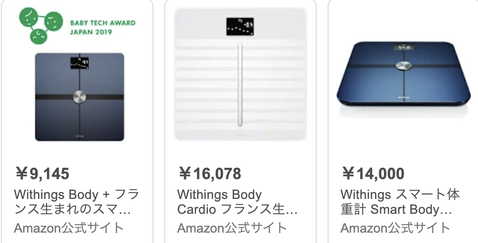
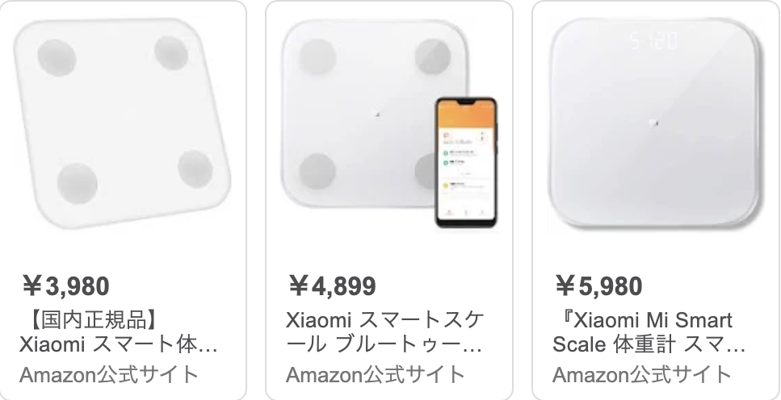
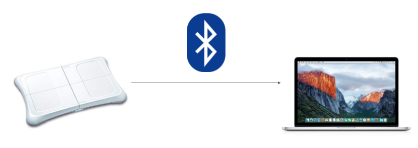
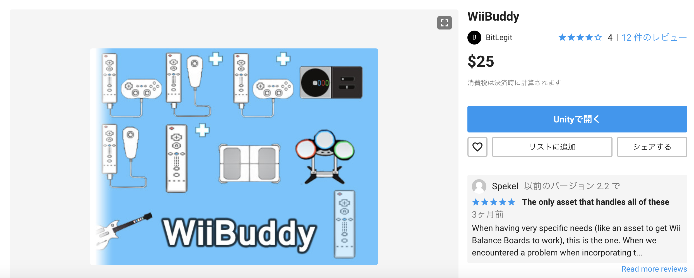
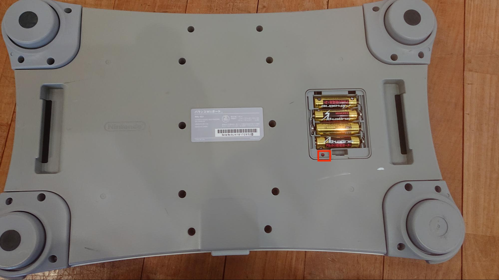
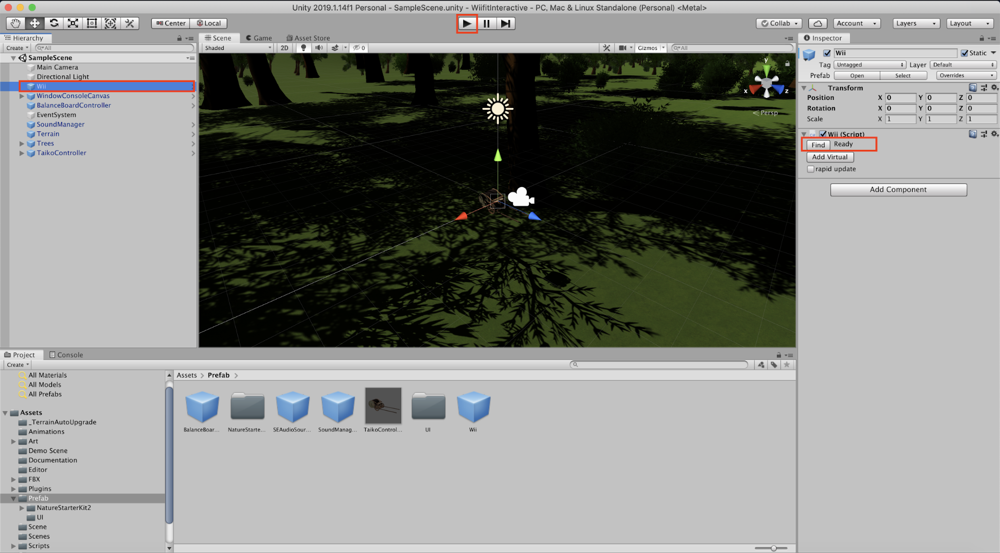

UnityとWii Balance Boardをつないで遊んでみた
自己紹介
|
質問1

WiiFitを知っている人!!
質問2
WiiFitを持っている人!!
質問3
WiiFitを持っていた人!!

- WiiFitとは2007年12月1日発売(13年前!!)のWii専用のフィットネスゲームソフト
- 同梱されている「バランスWiiボード」(ボードの正式名称)に乗って遊ぶ
- 世界一売れた「体重計」でギネス世界記録に認定
体重だけじゃなく重心やその他諸々の情報も取れちゃって、体重をサーバーに記録したりすることもできちゃう時代を先取りしすぎた超高性能体重計
※ Wiiを「レトロゲーム」と言うとおじさんたちが泣きますので絶対に言わないように!!
競合比較

|
 |  |
ちなみに

現代のNintendoのフィットネスソフトといえば
リングフィット アドベンチャー
ところで
- バランスWiiボードってPC(Mac/Windows)に繋げることができるって知ってました?
- Unityで開発できるって知ってました?
→開発しました!!
なんか作ってみた様子
ここで展示しています!!
ダ・ヴィンチ没後500年 「夢の実現」展どうなっているのか?
- バランスWiiボードの情報はBluetoothでつながる
- Bluetoothより送られてくる情報をリバースエンジニアリングすることで情報を取得
リバースエンジニアリング?

|
|

|
全てリバースエンジニアリング済み。Unityでも開発できます。
任天堂は格安で高性能ガジェットを販売してくれる素晴らしい企業です
開発に使用したもの

楽をしました...
僕は見ていない
WiiBuddyの仕様
- Unity 2019.1以下じゃないとUnityがクラッシュする
- Mac PCのみ対応(Windows PCには別にライブラリがある)
WiiBuddyを使ってバランスWiiボードとのつなぎかた
|  |  |
| 赤い●ボタンを押す | 「Find」ボタンを押す |
よくある質問
- エディタじゃなくてビルドしたもので使いたい → 多分使える(試していない)
- WiiFitからPINコードの入力を要求されたんだけど? → 無視してOK(PINコードを入力しないので)
- Android/iOSで使えないの? → ネイティブ処理においてかなりテクリが必要そうだけどいけそうな気はする...
デモ
その他、聞いてみたいことありましたらお気軽にどうぞ!!
- Twitter: @taptappun
- Facebook: 小林拓
- LINE: taptappun
- 他